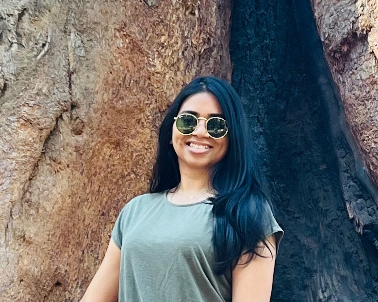
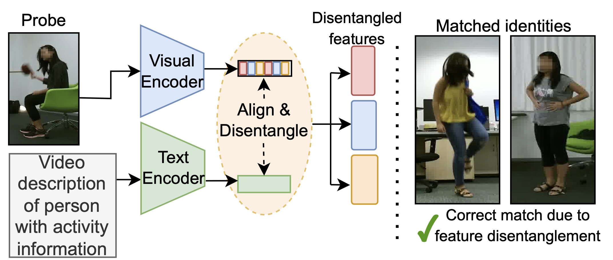
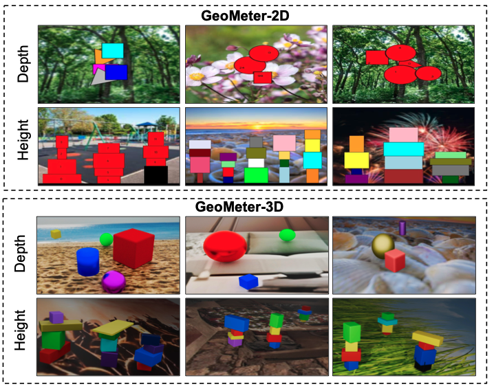
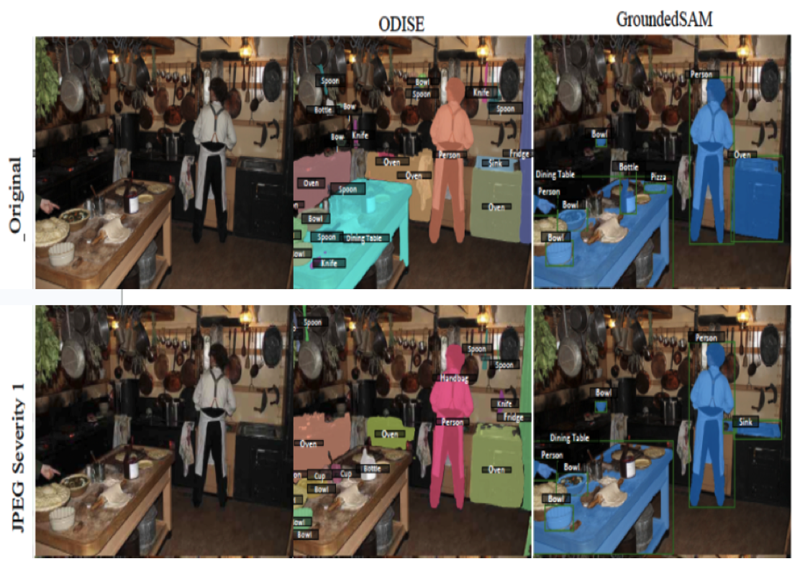
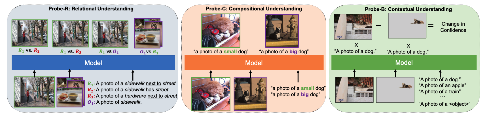
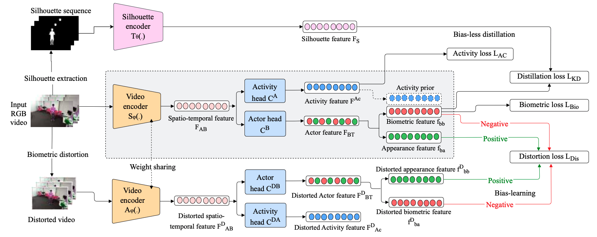

|
Shehreen Azad I am a fourth year PhD student at Center for Research in Computer Vision (CRCV), University of Central Florida (UCF), under the supervision of Dr Yogesh Singh Rawat. I have a broad interest in deep learning and computer vision. My research mainly focuses on long-form video understanding and multimodal reasoning. Currently looking for internship positions for Summer'26! Feel free to drop me an email. Email / Google Scholar / Resume / LinkedIn / |
 |
{kind=link}
Updates
Jun'25: One first-author paper got accepted in ICCV 2025 as Highlight. ⭐️🔥 |
PublicationsBelow is a selected list of my works (in chronological order), representative papers are highlighted. |
Streaming Long-form Video Understanding With On-time AnsweringShehreen Azad, Vibhav Vineet, Yogesh Singh Rawat Ongoing Developing a novel memory-augmented framework to equip Multimodal Large Language Models (MLLMs) with real-time, continuous understanding of long-form streaming video. |
|
|

|
Shehreen Azad, Yogesh Singh Rawat International Conference on Computer Vision, 2025 (ICCV) Highlight Patent pending Project Page / Paper A novel disentanglement-based Multimodal Large Language Model (MLLM) based architecture for robust activity-aware person identification. |
|

|
Shehreen Azad, Yash Jain, Rishit Garg, Vibhav Vineet, Yogesh Singh Rawat Computer Vision and Pattern Recognition Conference Workshops, 2025 (CVPR Workshops) 3rd Workshop on What is Next in Multimodal Foundation Models Project Page / Paper The first diagnostic benchmark for specifically evaluating the depth and height perception capabilities of Multimodal Large Language Models (MLLMs). |
|
|
Shehreen Azad, Vibhav Vineet, Yogesh Singh Rawat Computer Vision and Pattern Recognition Conference, 2025 (CVPR) Project Page / Paper A novel task-aware and hierarchical framework to equip Multimodal Large Language Models (MLLMs) for efficient arbitrarity long-form video understanding. |
|

|
Madeline Chantry Schiappa, Shehreen Azad, Sachidanand VS, Yunhao Ge, Ondrej Miksik, Vibhav Vineet, Yogesh Singh Rawat Computer Vision and Pattern Recognition Conference Workshops, 2024 (CVPR Workshops) 2nd Workshop on What is Next in Multimodal Foundation Models Paper / Data Investigated the robustness of Multimodal Foundation Models (MFMs) in the face of distribution shift caused by perturbations and corruptions across 17 different categories and 5 different severity levels. |
|

|
Madeline Chantry Schiappa, Raiyaan Abdullah, Shehreen Azad, Jared Claypoole, Michael Cogswell, Ajay Divakaran, Yogesh Singh Rawat Computer Vision and Pattern Recognition Conference Workshops, 2024 (CVPR Workshops) 2nd Workshop on What is Next in Multimodal Foundation Models Paper / Data Investigated and improved the relational, compositional and contextual understanding of Multimodal Large Language Models (MLLMs) through 3 novel benchmarks. |
|

|
Shehreen Azad, Yogesh Singh Rawat Computer Vision and Pattern Recognition Conference, 2024 (CVPR) Divisional patent pending Paper Proposed the novel task of activity-biometrics, which scales traditional gait-based person reID methods to activity-aware person reID. Developed a novel disentanglement based framework to improve robust activity-aware person reID. |
Awards |
 |
ICCV Travel Grant 2025
3 times recipient of UCF CS Ranking Incentive Award
2 times recipient of UCF Presentation Fellowship Award
2nd place,
IARPA BRIAR: Biometric Recognition and Identification at Altitude and Range
CVPR Travel Grant 2024
UCF ORCGS Doctoral Fellowship, 2023-2024
|
Professional Service |
 |
Reviewer, CVPR 2024, 2025, 2026
Reviewer, ICCV 2025 Reviewer, NeurIPS 2024, 2025 Reviewer, BMVC 2025 Reviewer, CVPR MMFM Workshop 2024, 2025 Reviewer, ICPR 2024 |
|
This website has been adopted from this source code. |